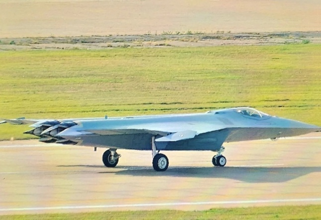
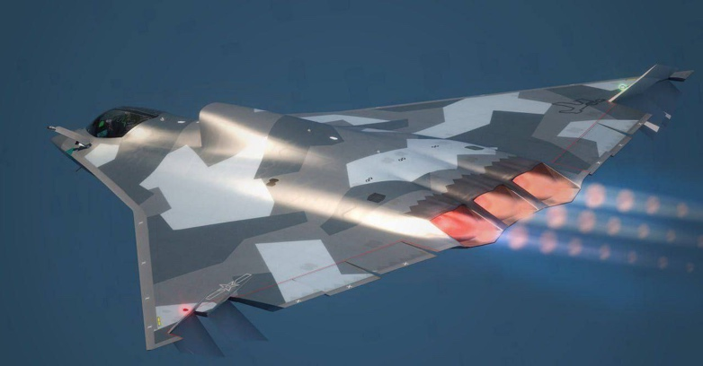
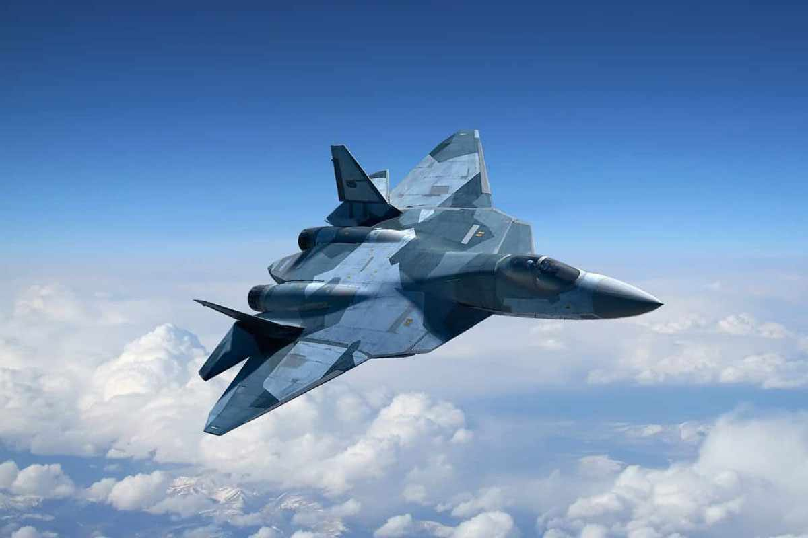
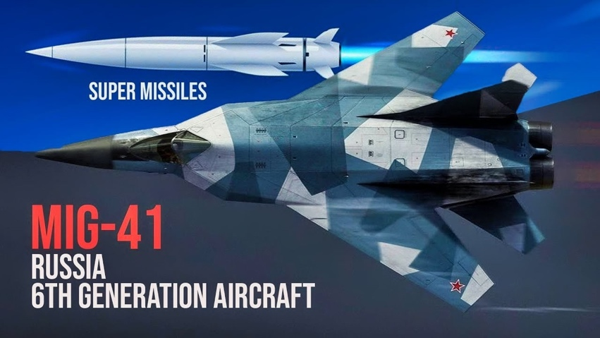
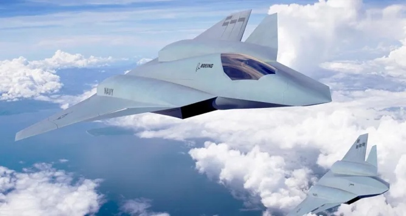
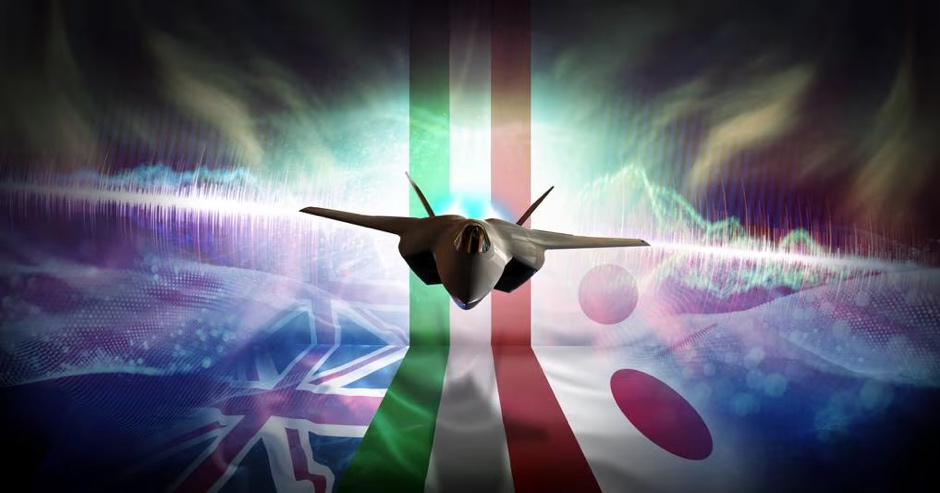
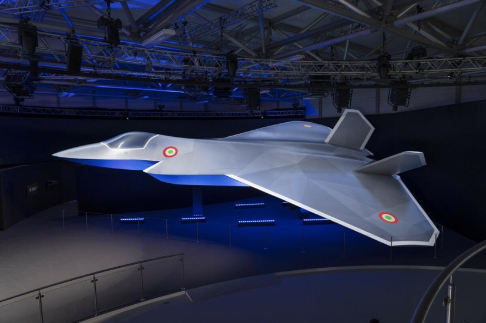
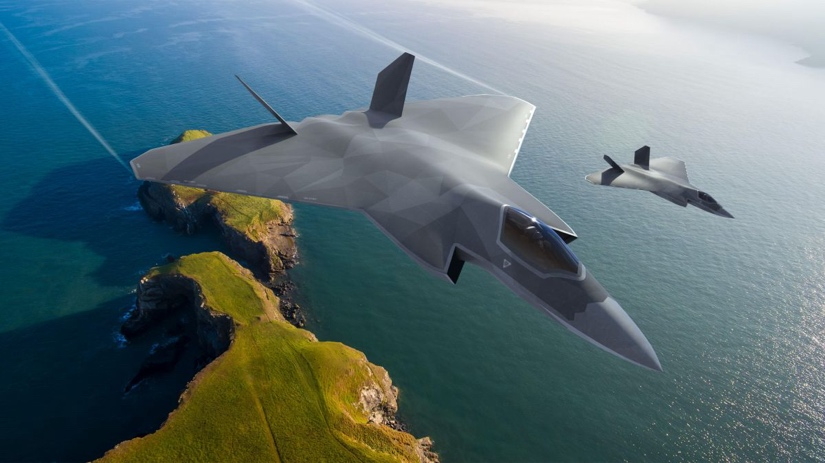

Caccia di Sesta Generazione
L'industria aerospaziale militare sta vivendo una fase di transizione cruciale. Mentre i velivoli di quinta generazione si affermano come standard operativo, le maggiori potenze mondiali sono gia impegnate nello sviluppo dei caccia di sesta generazione.
Rispetto al passato, il salto non e solo nella stealth: il cuore della nuova generazione e l'integrazione digitale totale tra sensori, rete dati, AI, droni e dominio spaziale. L'orizzonte operativo atteso e tra il 2030 e il 2040.

Caratteristiche previste
- Guerra informatica e spaziale: il velivolo diventa nodo avanzato per guerra elettronica e integrazione con asset spaziali.
- Team uomo-macchina: l'AI supporta il pilota e riduce i tempi decisionali.
- Opzionalita del pilota: impiego con equipaggio, in remoto o in modalita autonoma.
- Sistema di sistemi: controllo di droni gregari (Loyal Wingman), satelliti e stazioni di terra.
- Nuovi armamenti: integrazione futura di armi a energia diretta e capacita operative ad altissima velocita.

L'approccio allo sviluppo varia molto: in Occidente si tende a maturare prima le tecnologie, in Oriente si lavora spesso con prototipazione rapida e iterazioni frequenti.
Cina
Emergono design tailless orientati alla furtivita ampia banda, con attenzione a sensori avanzati e gestione energetica per sistemi futuri.

Russia (PAK DP / MiG-41)
Focus su intercettazione ad altissima velocita e lungo raggio, con orientamento alla risposta contro minacce ipersoniche.

Stati Uniti (NGAD e F/A-XX)
Due programmi distinti per US Air Force e US Navy, con priorita diverse tra superiorita aerea, autonomia e capacita marittime.

Europa (GCAP e FCAS)
La cooperazione tra consorzi europei e partner internazionali punta a sostenere i costi e accelerare la maturazione tecnologica.

GCAP: sistema di sistemi entro il 2035
Il Global Combat Air Programme nasce dalla convergenza tra Tempest e F-X. Non e solo un caccia, ma una piattaforma integrata multi-dominio (aria, terra, mare, spazio, cyber) con AI, sensori evoluti e controllo collaborativo di droni.
Ruolo industriale italiano
L'Italia partecipa come partner paritario con competenze su elettronica, propulsione, guerra elettronica e integrazione sistemi.

